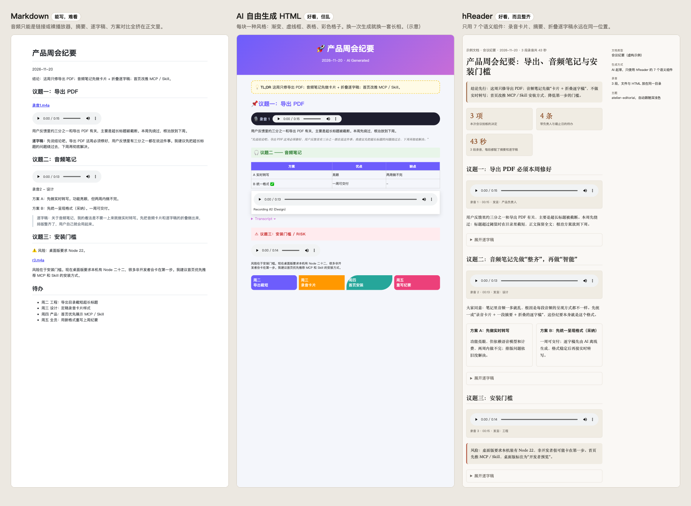

hReader · 开源 · MIT
AI 写 HTML 和写 Markdown 一样便宜，但它排版太自由，每次都不一样。hReader 用 7
个语义组件和一套主题约束 AI 的排版，用稳定的块 id 让 Agent
只改你批注的那一段。文档就是你硬盘上的一个
.html 文件，任何 Agent 都能读写。
选中一句话、写下批注，Agent 通过 MCP 只改这一段，阅读器自动刷新，批注自动归档。
内容完全相同，都包含 3 段录音。打开可交互的对比页

每一份都是一个普通的 HTML 文件，用 hReader 的组件和主题排版，点开就能看。
推荐从 MCP 或 Agent Skill 开始，需要 Node.js 22 以上。安装包在 GitHub Releases。
{
"mcpServers": {
"hreader": {
"command": "node",
"args": [
"/path/to/hreader-mcp-server/dist/main.js",
"--workspace", "/path/to/your/docs"
]
}
}
}# 下载 hreader-skill.zip 并解压到 skills 目录
unzip hreader-skill.zip -d ~/.claude/skills/
# 然后对 Agent 说：
# “用 hreader 把这次会议整理成一份纪要”